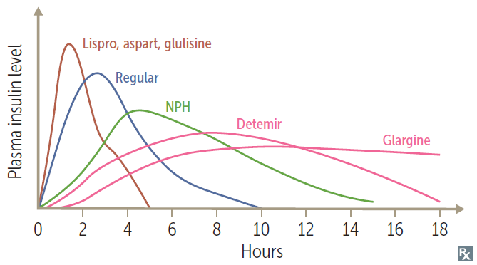

| Generic: | lispro, aspart, glulisine (rapid-acting, 1-hr peak, "no LAG") regular (short-acting, 2-3 hr peak) NPH (intermediate acting, 4-10 hr) determir, glargine (long-acting, no real peak) |
| Brand names: | Humalog (lispro), Admelog (lispro), NovoLog/NovoRapid (aspart), Apidra (glulisine) Afrezza Lantus (glargine), Levemir (detemir) |
| MECHANISM OF ACTION | Bind insulin receptor (tyrosine kinase activity) Liver: ↑ glucose storage as glycogen Muscle: ↑ glycogen, protein synthesis Fat: ↑ TG storage Cell membrane: ↑ K+ uptake |
| INDICATION | Diabetes mellitus |
| ADVERSE EFFECTS | Hypoglycemia, lipodysotrophy, hypersensitivty rates (rare), weight gain |
| NOTES |  |
| MECHANISM OF ACTION | Inhibit mGPD → inhibition of hepatic glyconeogenesis and the action of glucagon. ↑ glycolysis, peripheral glucose update ⇒ ↑ insulin sensitivity |
| INDICATION | Diabetes mellitus |
| ADVERSE EFFECTS | GI upset, lactic acidosis (use with caution in renal insufficiency), vit B12 def. Weight loss (often desired). |
| MECHANISM OF ACTION | Activate PPAR‑γ (a nuclear receptor) → ↑ insulin sensitivity and levels of adiponectin → regulation of glucose metabolism and fatty acid storage |
| INDICATION | Diabetes mellitus |
| ADVERSE EFFECTS | Weight gain, edema, HF, ↑ risk of fractures. Delayed onset of action (several weeks). Rosiglitazone: ↑ risk of MI, CV death |
| MECHANISM OF ACTION | Close K+ channels in pancreatic β‑cell membrane → cell depolarizes → Ca2+ influx → insulin release |
| INDICATION | Diabetes mellitus |
| CONTRAINDICATION | Sulfa allergy for sulfonylureas |
| ADVERSE EFFECTS | 1st gen sulfonylureas: disulfiram-like rxn; rarely used 2nd gen sulfonylureas: hypolgycemia (↑ risk in renal insufficiency), weight gain |
| MECHANISM OF ACTION | ↓ glucagon release, ↓ gastric emptying, ↑ glucose-dependent insulin release |
| INDICATION | Diabetes mellitus Long-term weight management (semaglutide) |
| ADVERSE EFFECTS | Nausea, vomiting, pancreatitis. Weight loss (often desired). ↑ satiety (often desired). |
| MECHANISM OF ACTION | Inhibit DPP‑4 enzyme that deactivates GLP‑1 → ↓ gastric emptying, ↑ glucose-dependent insulin release |
| INDICATION | Diabetes mellitus |
| ADVERSE EFFECTS | Respiratory and urinary infection, weight neutral. ↑ satiety (often desired). |
| MECHANISM OF ACTION | Block reabsorption of glucose in proximal convoluted tubules |
| INDICATION | Diabetes mellitus |
| CONTRAINDICATION | Use with caution in renal insufficiency (↓ efficacy with ↓ GFR). |
| ADVERSE EFFECTS | Glucosuria (UTIs, vulvovaginal candidiasis), dehdyradtion (orthostatic hypotension), hyperkalemia, weight loss. |
| MECHANISM OF ACTION | Inhibit intestinal brush-border α‑glucosidases → delayed carb hydrolysis and glucose absorption → ↓ postprandial hyperglycemia |
| INDICATION | Diabetes mellitus |
| CONTRAINDICATION | Renal insufficiency |
| ADVERSE EFFECTS | GI upset, bloating |
| MECHANISM OF ACTION | ↓ glucagon release, ↓ gastric emptying |
| INDICATION | Diabetes mellitus |
| ADVERSE EFFECTS | Hypoglycemia, nausea. ↑ satiety (often desired). |